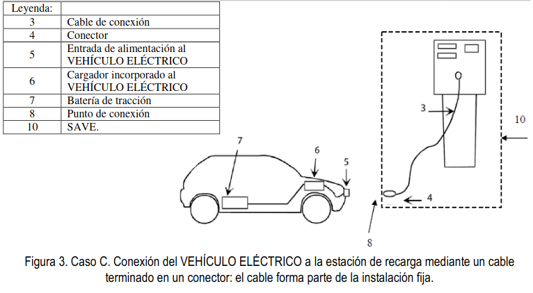

2. TERMINOS Y DEFINICIONES
TÉRMINOS Y DEFINICIONES.¶
A los efectos de esta instrucción se entenderá por:
Gestor de cargas
Sociedades mercantiles que, siendo consumidores, están habilitados para la reventa de energía eléctrica para servicios de recarga energética. Los gestores de carga del sistema son los únicos sujetos con carácter de cliente mayorista en los términos previstos en la normativa comunitaria de aplicación.(Definición según el artículo 6 de la ley 24/2013 del Sector eléctrico).
Circuito de recarga colectivo
Circuito interior de la instalación receptora que partiendo de una centralización de contadores o de un cuadro de mando y protección, está previsto para alimentar dos o más estaciones de recarga del VEHÍCULO ELÉCTRICO.
«Circuito de recarga individual».
Circuito interior de la instalación receptora que partiendo de la centralización de contadores está previsto para alimentar una estación de recarga del VEHÍCULO ELÉCTRICO, o circuito de una vivienda que partiendo del cuadro general de mando y protección está destinado a alimentaruna estación de recarga del VEHÍCULO ELÉCTRICO, (circuito C13).
Contador eléctrico principal
Contador de energía eléctrica destinado a la medida de energía consumida por una o varias estaciones de recarga. Estos contadores cumplirán con la reglamentación de metrología legal aplicable y con el reglamento unificado de puntos de medida.
Warning
Los contratos de acceso a la red se realizan siempre sobre un contador principal. Para los garajes en régimen de condominio,si se utilizanlos esquemas colectivos (1a,1b, 1c y 4b) el titular del contrato será la comunidad de vecinos y si se utilizan losesquemas individuales (2, 3a y 3b) cada vecino individual. Las empresas distribuidoras son las encargadas de la lectura de estos contadores, pero no de los contadores secundarios.
Contador secundario
Sistema de medida individual asociado a una estación de recarga, que permite la repercusión de los costes y la gestión de los consumos. Estos sistemas de medida individuales cumplirán la reglamentación de metrología legal aplicable, pero no están sujetos al reglamento unificado de puntos de medida al no tratarse de puntos frontera del sistema eléctrico.
Warning
La reglamentación de metrología aplicable es la siguiente:
- RD 244/2016 para contadores de activa de clases A, B, y C para uso residencial, comercial o de industria ligera, en la fase de evaluación de la conformidad.
- ITC3022/2007 para los contadores estáticos combinados activa, clases A, B y C y reactiva de clases2 y 3 hasta 15 kW con discriminación horaria y telegestión hasta una potencia de 15 kW en activa en las fases de evaluación de la conformidad, verificación después de reparación o modificación y de verificación periódica.
- ITC 3747 para contadores estáticos de activa de clases A, B, y C para uso residencial, comercial o de industria ligera, en las fases de verificación después de reparación o modificación y de verificación periódica.
A los contadores secundarios no les resultan aplicables los requisitos de telegestión, ya que las empresas distribuidoras no son las encargadas de su lectura.
Estación de movilidad eléctrica
Infraestructura de recarga que cuenta con, al menos, 2 estaciones de recarga, que permitan la recarga simultánea de vehículo eléctrico con categoría hasta M1 (Vehículo eléctrico de ocho plazas como máximo -excluida la del conductor-diseñados y fabricados para el transporte de pasajeros) y N1 (Vehículo eléctrico cuya masa máxima no supere las 3,5 toneladas diseñados y fabricados para el transporte de mercancías), según la Directiva 2007/46/CE. Ha de posibilitar la recarga en corriente alterna (monofásica o trifásica) o en corriente continua
Estación de recarga
Conjunto de elementos necesarios para efectuar la conexión del VEHÍCULO ELÉCTRICO a la instalación eléctrica fija necesaria para su recarga. Las estaciones de recarga se clasifican como:
- Punto de recarga simple, compuesto por las protecciones necesarias, una o varias bases de toma de corriente no específicas para el vehículo eléctrico y, en su caso, la envolvente.
- Punto de recarga tipo SAVE (Sistema de alimentación específico del vehículo eléctrico)
Función de control piloto
Cualquier medio, yasea electrónico o mecánico, que asegure que se satisfacen las condiciones relacionadas con la seguridad y con la transmisión de datos requeridas según el modo recarga utilizado.
Infraestructura de recarga de vehículos eléctricos (IVEHÍCULO ELÉCTRICO)
Conjunto de dispositivos físicos y lógicos, destinados a la recarga de vehículos eléctricos que cumplan los requisitos de seguridad y disponibilidad previstos para cada caso, con capacidad para prestar servicio de recarga de forma completa e integral. Una IVEHÍCULO ELÉCTRICO incluye las estaciones de recarga, el sistema de control, canalizaciones eléctricas, los cuadros eléctricos de mando y protección y los equipos de medida, cuando éstos sean exclusivos para la recarga del vehículo eléctrico.
Modo decarga 1
Conexión del vehículo eléctrico a la red de alimentación de corriente alterna mediante tomas de corriente normalizadas, con una intensidad no superior a los 16A y tensión asignada en el lado de la alimentación no superior a 250V de corriente alterna en monofásico o 480V de corriente alterna en trifásico y utilizando los conductores activos y de protección.
Modo de carga 2
Conexión del vehículo eléctrico a la red de alimentación de corriente alterna no excediendo de 32A y 250V en corriente alterna monofásica o 480V en trifásico, utilizando tomas de corriente normalizadas monofásicas o trifásicas y usando los conductores activos y de protección junto con una función de control piloto y un sistema de protección para las personas, contra el choque eléctrico (dispositivo de corriente diferencial), entre el vehículo eléctrico y la clavija o como parte de la caja de control situada en el cable.
Modo de carga 3
Conexión directa del vehículo eléctrico a la red de alimentación de corriente alterna usando un SAVE, dónde la función de control piloto se amplía al sistema de control del SAVE, estando éste conectado permanentemente a la instalación de alimentación fija.
Modo de carga 4
Conexión indirecta del vehículo eléctrico a lared de alimentación de corriente alterna usando un SAVE que incorpora un cargador externo en que la función de control piloto se extiende al equipo conectado permanentemente a la instalación de alimentación fija
Punto de conexión
Punto en el que el vehículo eléctrico se conecta a la instalación eléctrica fija necesaria para su recarga, ya sea a una toma de corriente o a un conector.
Sistema de alimentación específico de vehículo eléctrico (SAVE)
Conjunto de equipos montados con el fin de suministrar energía eléctrica para la recarga de un VEHÍCULO ELÉCTRICO, incluyendo protecciones de la estación de recarga, el cable de conexión, (con conductores de fase, neutro y protección) y la base de toma de corriente o el conector. Este sistema permitirá en su caso la comunicación entre el VEHÍCULO ELÉCTRICO y la instalación fija. En el modo de carga 4 el SAVE incluye también un convertidor alterna-continua.
Nota: las definiciones de la función de control piloto, de los modos de carga y del sistema de alimentación específico del vehículo eléctrico (SAVE) están basadas en las normas internacionales aplicables.
Sistema de protección de la línea general de alimentación (SPL)
Sistema de protección de la línea general de alimentación contra sobrecargas, que evita el fallo de suministro para el conjunto del edificio debido a la actuación de los fusibles de la caja general de protección, mediante la disminución momentánea de la potencia destinada a la recarga del VEHÍCULO ELÉCTRICO. Este sistema puede actuar desconectando cargas, o regulando la intensidad de recarga cuando se utilicen los modos 3 o 4.La orden de desconexión y reconexión podrá actuar sobre un contactor o sistema equivalente.
Warning
Con posterioridad a la publicación del RD 1053/2014 que aprueba la ITC-BT 52 se ha aprobado la Especificación UNE 0048 " Infraestructura para la recarga de vehículos eléctricos. Sistema de protección de la línea general de alimentación (SPL)" que facilita directrices e información con respecto de las funcionalidades y requisitos de seguridad mínimos de un SPL y es aplicable a todas aquellas soluciones que pretenden realizar la función de SPL. Un SPL puede presentarse como un producto único, un conjunto de productos y medidas, soluciones de hardware osoftware o sistemas domóticos oinmóticos
Vehículo eléctrico (VEHÍCULO ELÉCTRICO)
Vehículo eléctrico cuya energía de propulsión procede, total o parcialmente, de la electricidad de sus baterías utilizando para su recarga la energía de una fuente exterior al vehículo eléctrico, por ejemplo, la red eléctrica
Tipos de conexión entre la estación de recarga y el VEHÍCULO ELÉCTRICO
La conexión entre la estación de recarga y el VEHÍCULO ELÉCTRICO se podrá realizar según los casos A, B y C descritos en las figuras 1, 2 y 3. Nótese que las figuras 1, 2 y 3 no presuponen ningún diseño específico.

Caso A1:conexión a un punto de recarga simple mediante una toma de corriente para usos domésticos y análogos. Caso A2: conexión a un punto de recarga tipo SAVE.
Caso B1: conexión a un punto de recarga simple mediante una toma de corriente para usos domésticos y análogos. Caso B2: conexión a un punto de recarga tipo SAVE.
